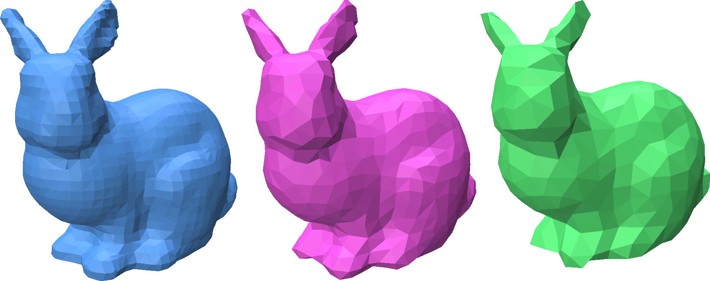

Decimating a Mesh
Point Cloud Utils supports mesh decimation using the Quadric Edge Collapse algorithm.
import numpy as np
import point_cloud_utils as pcu
v, f = pcu.load_mesh_vf("bunny.ply")
v_quarter, f_quarter, _, _ = pcu.decimate_triangle_mesh(v, v, max_faces=f.shape[0]//4)
v_eighth, f_eighth, _, _ = pcu.decimate_triangle_mesh(v, v, max_faces=f.shape[0]//8)
